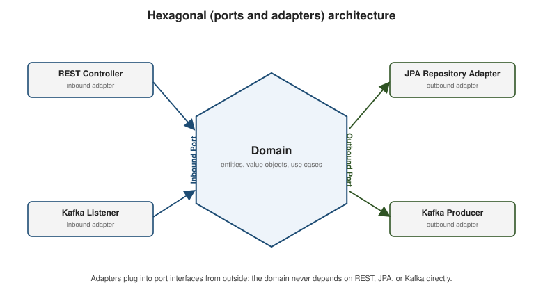

Architectural Patterns
|
This content was generated with the assistance of AI and should be verified against the official documentation before being relied on in production. |
None of the patterns on this page is Spring-specific — they predate Spring Boot by years — but a Spring Boot codebase is where most Java developers meet them in practice. This page is an introduction to each one, framed with the Spring building blocks already covered earlier in this section, not a full architecture course.
SOLID, briefly
The five SOLID principles guide how classes and interfaces are shaped so a codebase stays easy to change. Each one already shows up, usually without being named, in the pages before this one:
| Principle | A Spring-flavored example already used in this section |
|---|---|
S — Single Responsibility |
A |
O — Open/Closed |
Spring Boot’s own auto-configuration (Core Concepts) is added to by
registering a new |
L — Liskov Substitution |
Any |
I — Interface Segregation |
A narrow |
D — Dependency Inversion |
Constructor injection of an interface, not a concrete class — |
public interface PaymentGateway { // an abstraction the domain owns (DIP, ISP)
PaymentResult charge(OrderId orderId, Money amount);
}
@Service
public class OrderService {
private final PaymentGateway paymentGateway; // constructor-injected interface, not an implementation
public OrderService(PaymentGateway paymentGateway) {
this.paymentGateway = paymentGateway;
}
}Hexagonal (ports and adapters) architecture
Hexagonal architecture (also called ports and adapters), introduced by Alistair Cockburn, puts the domain at the center of the application and pushes every technical concern — HTTP, a database, a message broker — to the outside, behind interfaces the domain itself defines:

-
A port is an interface the domain declares. An inbound (driving) port is what the outside world calls into the domain through; an outbound (driven) port is what the domain calls out through when it needs something from the outside world.
-
An adapter implements or calls a port from outside the domain. Inbound adapters translate an external trigger into a call on an inbound port (a
@RestControllertranslating an HTTP request, a@KafkaListenertranslating an incoming message); outbound adapters implement an outbound port the domain depends on (a@Repositoryimplementation backed by JPA, aKafkaTemplate-based publisher).
// inbound port: what the outside world calls into the domain through
public interface PlaceOrderUseCase {
OrderId placeOrder(PlaceOrderCommand command);
}
// outbound port: what the domain calls out through -- it knows nothing about JPA
public interface OrderRepository {
void save(Order order);
Optional<Order> findById(OrderId id);
}
// domain service implementing the inbound port, depending only on the outbound port
@Service
public class OrderDomainService implements PlaceOrderUseCase {
private final OrderRepository orders; // outbound port, not a JPA type
public OrderDomainService(OrderRepository orders) {
this.orders = orders;
}
@Override
public OrderId placeOrder(PlaceOrderCommand command) {
Order order = Order.create(command);
orders.save(order);
return order.id();
}
}
// inbound adapter: translates HTTP into a call on the inbound port
@RestController
@RequestMapping("/orders")
public class OrderController {
private final PlaceOrderUseCase placeOrder;
public OrderController(PlaceOrderUseCase placeOrder) {
this.placeOrder = placeOrder;
}
@PostMapping
public ResponseEntity<OrderId> create(@RequestBody PlaceOrderRequest request) {
OrderId id = placeOrder.placeOrder(request.toCommand());
return ResponseEntity.ok(id);
}
}
// outbound adapter: implements the outbound port using JPA
@Repository
public class JpaOrderRepository implements OrderRepository {
private final SpringDataOrderRepository springDataRepository; // the actual JpaRepository
public JpaOrderRepository(SpringDataOrderRepository springDataRepository) {
this.springDataRepository = springDataRepository;
}
@Override
public void save(Order order) {
springDataRepository.save(OrderEntity.fromDomain(order));
}
@Override
public Optional<Order> findById(OrderId id) {
return springDataRepository.findById(id.value()).map(OrderEntity::toDomain);
}
}The domain module (OrderDomainService, PlaceOrderUseCase, OrderRepository, Order) never imports
org.springframework.web., jakarta.persistence., or a Kafka client type — those only appear in the
adapters. That is the entire payoff: the domain can be unit-tested with no Spring context at all, and swapping
REST for gRPC or JPA for MongoDB means writing a new adapter, not touching the domain.
Domain-driven design vocabulary
A few domain-driven design (DDD) terms recur once a codebase adopts hexagonal architecture, because they give names to the shapes already appearing inside the domain layer above:
// entity: has an identity that persists across changes to its other fields
public class Order {
private final OrderId id; // identity
private OrderStatus status; // mutable state
private final List<OrderLine> lines;
public static Order create(PlaceOrderCommand command) {
Order order = new Order(OrderId.generate(), OrderStatus.PLACED, command.lines());
order.registerEvent(new OrderPlaced(order.id)); // a domain event, see below
return order;
}
}
// value object: no identity, defined entirely by its attributes, and immutable
public record Money(BigDecimal amount, Currency currency) {
public Money add(Money other) {
if (!currency.equals(other.currency)) {
throw new IllegalArgumentException("currency mismatch");
}
return new Money(amount.add(other.amount), currency);
}
}
// aggregate: a cluster of entities/value objects treated as one consistency boundary,
// modified only through its root -- here, Order is the aggregate root for its OrderLines
public class OrderLine {
private final ProductId productId;
private final int quantity;
private final Money unitPrice;
}
// domain event: a fact about something that already happened inside the domain
public record OrderPlaced(OrderId orderId) {
}An entity is compared by identity (two Order instances with the same id are the same order, even if
their status differs); a value object is compared by its attributes and never mutated in place, only
replaced. An aggregate groups entities and value objects that must stay consistent together — code outside
the aggregate holds a reference only to its root (Order, never a bare OrderLine) and every change goes
through the root’s methods, which is what keeps invariants (e.g. "an order’s lines must not be empty") from
being violated by a change made anywhere else. A domain event records that something significant already
happened, so other parts of the system — inside or outside the same process — can react without the code that
caused the event needing to know who is listening.
For the full treatment of entities, value objects, and aggregates — invariants, identity vs. equality, and how an aggregate’s root enforces its consistency boundary — see Entities, Value Objects, and Aggregates.
The transactional outbox pattern
Publishing a Kafka event as a direct side effect of a database write has a well-known failure mode: the database
transaction commits but the process crashes before the Kafka send, or the Kafka send succeeds but the
transaction then rolls back — either way, the database and the topic disagree about what happened. The
transactional outbox pattern avoids this dual write problem by writing the event to an outbox table in the
same local transaction as the business change, then letting a separate process relay outbox rows to Kafka:
@Entity
@Table(name = "order_outbox")
public class OutboxEntry {
@Id
@GeneratedValue
private Long id;
private String aggregateId;
private String eventType;
@Lob
private String payload; // the event, serialized (e.g. as JSON)
private boolean published = false;
}
@Service
public class OrderDomainService implements PlaceOrderUseCase {
private final OrderRepository orders;
private final OutboxRepository outbox;
@Transactional
@Override
public OrderId placeOrder(PlaceOrderCommand command) {
Order order = Order.create(command);
orders.save(order); // business write
outbox.save(OutboxEntry.forEvent(new OrderPlaced(order.id()))); // outbox write -- SAME transaction
return order.id();
}
}
// a separate relay, e.g. a @Scheduled poller (see backend/springboot/scheduling-and-shedlock.adoc)
@Component
public class OutboxRelay {
@Scheduled(fixedDelay = 1000)
@SchedulerLock(name = "outboxRelay", lockAtMostFor = "PT1M")
@Transactional
public void relay() {
outbox.findUnpublished().forEach(entry -> {
kafkaTemplate.send("orders", entry.getAggregateId(), entry.getPayload());
entry.markPublished();
});
}
}Because the business row and the outbox row commit or roll back together, an event is never published for a change that didn’t actually happen, and every committed change eventually gets an event published, even if the relay is briefly down — at the cost of at-least-once delivery (the relay must be restartable and the consumer side idempotent, since a crash between the Kafka send and marking the row published can replay it).
For the full treatment, see The Transactional Outbox Pattern.
Listen to yourself
The listen-to-yourself pattern is a variation on the outbox idea: instead of (or in addition to) a service
acting on its own write directly, it publishes an event and then consumes that same event itself, from the
same topic every other interested service reads from, to perform the side effects of its own write. This keeps
exactly one code path — the @KafkaListener — responsible for reacting to "an order was placed," whether the
trigger came from this service’s own action or, later, from a replay/rebuild of the topic. See
Listen
to Yourself for the original write-up. For the full treatment, see
Listen to Yourself.
The saga pattern
A single business operation that spans several services — placing an order might need to reserve inventory, charge a payment, and schedule shipping, each owned by a different service with its own database — can’t use a single ACID transaction across all of them. A saga coordinates such an operation as a sequence of local transactions, one per service, with compensating actions to undo prior steps if a later one fails. There are two common styles:
-
Orchestration: a dedicated orchestrator (itself often just another Spring Boot service) explicitly calls each participant in turn and decides what to do next, including which compensating action to trigger on failure. The coordination logic lives in one place, which is easier to reason about and test, at the cost of a central component every step depends on.
-
Choreography: there is no orchestrator — each service reacts to the previous service’s event (via Kafka, building directly on Messaging with Kafka) and publishes its own event in turn, including a compensating event on failure. There is no single point of coordination or failure, but the overall flow is implicit, spread across every participant’s event handlers, which makes it harder to see or change as a whole.
Neither style is a Spring feature — both are typically built from the same @KafkaListener/KafkaTemplate
building blocks already covered in Messaging with Kafka, plus,
for orchestration, an ordinary @Service driving the sequence.
For the full treatment, see Sagas.
Where this section stops
This page is deliberately introductory — SOLID, hexagonal architecture, DDD, the outbox, listen-to-yourself, and sagas each easily fill a book on their own. The dedicated Architectural Patterns section under Backend Development now provides that deeper treatment, with worked examples of each pattern end to end. For whether and how to split a system into services in the first place, and how to migrate and layer it once that decision is made, see the Architecture Decisions and Migration Paths reference.